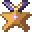
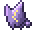
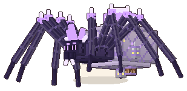
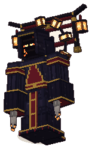

星渊秘境
茶屋后院的星渊井通往一座倒过来的星空：付门票下井，一层层往下打，带着星尘回来炼成徽章、合金和符文。目前开放 1–15 层

一句话
星渊是魂类慢节奏的小副本：读招、翻滚、弹反、处决。死了不掉背包、装备、经验和茶屋币，只会把身上的星尘留在原地，走回去还能捡。一段 5 层大约 15–20 分钟，可以一个人下，也能 2–4 人组队。
怎么进去
- 星渊井：在茶屋后院，有悬浮字和星光粒子。右键星渊井打开星渊井菜单，所有操作都在菜单里点按钮。
- 不在井边时：输入
/xy（全称/xingyuan）或在主菜单/menu最下一行点「🌌 星渊秘境」，也能打开星渊井菜单；菜单里的「🧭 前往星渊井」可以把你送到井边。 - 出发要站在井边 6 格内，并付门票（茶屋币）：
| 按钮 | 门票 | 解锁条件 |
|---|---|---|
| 🌿 从第 1 层出发 | 200 币 | 一开始就能下 |
| 💎 从第 6 层出发 | 400 币 | 打败第 5 层首领 落英 |
| 🏮 从第 11 层出发 | 700 币 | 打败第 10 层首领 紫绡 |
| 🧭 从第 N 层接着下 | 按这一层所在段收（200 / 400 / 700） | 上次在阶梯旁回茶屋留下的路标（见下方「断点续玩」） |
第一次下井会有新手引导：起点茶炉旁立着操作提示牌，聊天栏有「📖 星渊怎么玩 / 🎮 战斗操作」按钮。想再看一遍，点星渊井菜单的「🔰 新手引导」。
战斗操作
在星渊里，经验条会变成体力条（满 100），原版的金苹果和药水不能用，饱食度也不会自然回血，回血只能靠随身茶壶和守夜茶炉。出了星渊一切恢复原版。
| 动作 | 怎么按 | 效果 |
|---|---|---|
| 🌀 翻滚 | 潜行 + 跳跃 | 朝方向键冲出去（不按方向键就往后撤），前 0.35 秒无敌；扣 25 体力 |
| 🛡 举盾格挡 | 拿盾右键举起、面向怪 | 挡 70% 伤害，扣 15 体力；体力不够会被破盾 |
| ✨ 完美弹反 | 白光招落下前 0.25 秒内举盾 | 这一下伤害全免，怪踉跄 2 秒（期间受伤 +50%） |
| ⚠ 处决 | 怪跪地（头顶 ⚠）时对着它 潜行 + 右键 | 当前攻击力 ×3 的一击 |
| 🫖 喝茶 | 拿着随身茶壶右键 | 每轮 3 口，每口回 8 颗心；喝的 1 秒里不能走动 |
读招颜色：怪出招前会发光——⚪ 白光可以弹反，🟡 黄光能挡但会破盾、最好翻滚，🔴 红光挡不住、只能翻滚或走开。一直打同一只怪会涨它头顶的韧性条，打满它就跪地，正好处决。
一层是什么样
每层是一排房间，走廊相连，门口上方的门牌写着下一间是什么。进层时聊天栏会列出整条路线和本层的梦魇词条。每层 3–4 间：1 间战斗房、第 2 层起 1 间精英房、1 间趣味房，还有 60% 机会多一间特殊房（商人 / 宝箱 / 挑战），中间穿插守夜茶炉。
| 房间 | 里面有什么 |
|---|---|
| ⚔ 战斗房 | 星光帘落下关门，清完怪开门。怪数：1–2 层 3 只，3–10 层 4 只，11 层起 5 只（5 只时分两波） |
| ⭐ 精英房 | 1 只金名「梦魇·××」精英 + 2 只随从。精英更大更硬、会多一招红圈震地，名字前的图标是它的词条 |
| 🎐 趣味房 | 5 种小玩法，失败不罚（见下一节） |
| 🫖 守夜茶炉 | 右键：回满血、体力和茶壶，并在这里存档（之后死了在这里醒来） |
| 🛒 行脚商人 | 用身上的星尘买本轮增益 |
| 🎁 宝箱房 | 右键宝箱得星尘；有 20% 是宝箱怪，打赢给 3 倍星尘 |
| 🧩 挑战房 | 三选一：⏱ 90 秒限时清场 / 🛡 最多挨 1 下 / 🏹 只能用弓。成功本房星尘翻倍，失败照常开门 |
| 👑 首领房 | 第 5、10、15 层，打赢解锁下一段 |
| 🌀 星渊阶梯 | 右键中间的磁石：「⬇ 下到下一层」或「🏮 带着星尘回茶屋」 |
三个区域与首领
| 层 | 区域 | 首领 |
|---|---|---|
| 1–5 | 🌿 初代茶庭 | 第 5 层 🌳 初代茶樱·落英 |
| 6–10 | 💎 雾沼晶窟 | 第 10 层 💜 晶窟织主·紫绡 |
| 11–15 | 🏮 千灯夜市 | 第 15 层 🏮 千灯祭主·烛夜：开打会点亮 4 盏祭会大灯，灯亮着它刀枪不入，先把灯打灭它就会跪地 |
越往下怪越硬：第 10 层怪物血量约是第 1 层的 3.5 倍，第 15 层约 4.6 倍。11 层起精英会带 👻 隐匿（不出招时隐身）、⚡ 迅捷（出招更快）等新词条。
🎐 趣味房
每个普通层有 1 间，首领层有一半机会出现。失败不罚：不扣星尘、门照开。打满大约能拿一间战斗房的星尘，玩一次 30–45 秒。除了迷途灯笼，其它几种不想玩可以直接穿过去。
| 玩法 | 怎么玩 | 奖励 |
|---|---|---|
| 🐭 星尘鼠快跑 | 金光星尘鼠满屋乱窜，35 秒内摸到它 3 次；它停下来嗅（头上冒音符）时最好抓 | 每摸到一次给 1/3 份 |
| 🏮 茶会记灯 | 4 盏彩灯按顺序亮，记住后照顺序右键；3 轮，分别 3 / 4 / 5 盏 | 每过一轮给一部分，按错就散场，过了几轮给几轮 |
| ⛲ 许愿池 | 投 ✦20 / 40 / 80 星尘（随层数变多，单次最多 ✦300）赌一把，每人每个池子只能投一次；也可以免费抽一支茶签 | 35% 翻倍「锦鲤跃起」；15% 退回并送一样本轮增益；50% 沉底 |
| 🕯 迷途灯笼 | 陪提灯的小悦灵走到对面灯座：它身边 4.5 格没人就不走，路上会冒梦魇，要边打边护送（这间会关门） | 打梦魇掉星尘，送到再给一份，灯光会驱散剩下的梦魇 |
| 🌠 星雨 | 25 秒里青色星星往下掉，走到青圈里接住；每隔一会儿有陨星砸在脚边（红圈），翻滚躲开 | 全部接住 = 1 份。陨星一下最多 2 颗心，砸不死人 |
🌌 每周天象
每周一 00:00（北京时间）换一次，星渊井菜单顶部写着本周天象和下次轮换时间，每轮第一次进层时聊天栏也会说一次。天象都是轻微的增减益：
| 天象 | 效果 |
|---|---|
| 🌑 月蚀 | 怪物出招后的硬直略短（×0.9），星尘 ×1.1 |
| 🐀 鼠鼠过街 | 一半的战斗房多一窝窃星鼠，打倒能拿回被偷的星尘 |
| 🌸 花吹雪 | 翻滚无敌时间 +0.1 秒 |
| 🌧 暴雨 | 弓箭伤害 ×0.85，但怪物硬直略长（×1.1），近战更好找空档 |
星尘、惊醒与残梦
- ✦ 星尘：打怪、开箱掉一团发光的星尘，走近就自动吸进身上；屏幕上方的紫色条显示身上星尘、层数和房间进度。地上的星尘 120 秒没人捡会消散。小心窃星鼠：它会去偷地上的星尘，追上打死能拿回双倍。
- 死亡 = 惊醒：你会在最后休息的守夜茶炉醒来，背包、装备、经验、茶屋币一律不掉；身上的星尘留在死的地方，结成「💭 残梦」。走回去摸到就全部拿回；拿回前再死一次，那团就没了。
- 回茶屋：在守夜茶炉或星渊阶梯点「🏮 带着星尘回茶屋」，身上的星尘全部存进星尘储蓄。在别处用「🏮 回茶屋」按钮（
/xy leave）离开，只能带回一半。 - 下线 / 重启不会丢进度：再上线会回到最后休息的茶炉，身上的星尘和残梦都还在。
- 📿 复活符：星渊井菜单里 1000 币买（或在兑换所用 1 枚星辉徽章换），下次下井自动带上，每轮最多 1 个。挨到致命一击时原地站起，回一半血，星尘不掉。
🧭 断点续玩
在阶梯旁回茶屋，下次可以从下一层接着下；在茶炉或中途回茶屋，下次从这一层重新开始。星渊井菜单会出现「🧭 从第 N 层接着下」，门票照这一段收，用一次就收起。组队时看队长的路标。
👥 组队同下（2–4 人）
- 星渊井菜单「👥 组队同下」→ 点在线玩家的头像邀请，对方在聊天栏点「✔ 加入小队」（60 秒有效）。
- 只有队长能出发，全队都要在井边 6 格内；每人各付一张门票，有人付不起就全部退回、谁都不下。能从第几层出发看队长的进度。
- 怪物血量跟着在线人数变：2 / 3 / 4 人 ×1.6 / 2.1 / 2.6。星尘各掉各的，写着名字只有本人捡得到。
- 守夜茶炉共用存档点，但回血补茶要自己右键；任何人在阶梯点「下到下一层」全队一起下；回茶屋是每人自己决定，只带走自己的星尘。
🛒 行脚商人
用身上的星尘买，本轮有效（死了也保留，离开星渊就没了）。每深一层涨价 10%，每样本轮限买 1 次。
| 货 | 价格（星尘，第 1 层） | 效果 |
|---|---|---|
| 🗡 磨刀石 | 60 | 打怪伤害 +10% |
| 🧧 护身符纸 | 70 | 受到怪招伤害 -10% |
| 🪶 轻身符 | 40 | 翻滚少花 5 点体力 |
| 🩴 疾风草鞋 | 40 | 移动速度 +10% |
| 📿 星辉护符 | 80 | 生命上限 +4（2 颗心） |
| 🫖 多一口茶 | 50 | 随身茶壶 +1 口 |
✨ 星辉炼台
星渊井菜单 →「✨ 星辉炼台」，用星尘储蓄炼成物品：

- 左键炼 1 个，潜行 + 左键炼 10 个。「🌟 一键炼成」按你选的「⚖ 炼成偏好」分：全炼徽章 / 均衡（徽章 50% · 碎片 35% · 合金 15%）/ 锻造优先（碎片 70% · 合金 30%）。
- 🔮 符文合成：10 片符文碎片 → 1 枚随机符文（白 50% / 蓝 35% / 紫 13% / 金 2%）。
- ♻ 符文熔铸：3 枚同品质符文 + 2 个锻造合金 → 1 枚高一品的随机符文。
战利品：符文与晶核
战利品直接进背包（背包满了掉在脚下，只有你能捡），死了也不掉。符文镶在装备上、晶核用来升星 ★6–★10，见 锻造坊 · ★6–★10。
🏅 星辉兑换所
星渊井菜单 →「🏅 星辉兑换所」，花背包里的星辉徽章（部分外观花茶屋币）：
| 兑换 | 价格 | 说明 |
|---|---|---|
| 📿 复活符 | 1 徽章 | 和 1000 币买的一样 |
| 🎖 冒险家星辉徽章 ×2 | 1 徽章 | 冒险公会通用，每天最多换 4 次 |
| 💎 星辉紫晶核 ×2 | 1 徽章 | 每天 3 次 |
| 🔶 首领晶核 | 4 徽章 | 每周 2 个 |
| 🌌 星渊晶核 | 12 徽章 | 每周 1 个 |
| 🔮 蓝符文袋 / 紫符文袋 | 2 / 5 徽章 | 蓝袋至少蓝品，紫袋至少紫品 |
| 🌌 称号「星渊行者」 | 3 徽章 | 永久，在称号菜单佩戴 |
| ✨ 星尘拖尾 7 天 | 3 徽章 | 重复兑换累加天数 |
| 🌸 樱花瓣拖尾 | 10,000 币 | 永久 |
| 🏮 千灯萤火拖尾 | 25,000 币 | 永久，要先首通第 15 层；「🌙 拖尾切换」在拥有的拖尾之间换 |
 🫖 守夜小茶炉（3D 纪念家具） 🫖 守夜小茶炉（3D 纪念家具） | 4 徽章 | 摆回家的守夜茶炉：常亮光照 12，右键喝守夜热茶回血，动作栏显示你的星渊最深层数 |
 🔮 雾沼紫晶灯（3D 纪念家具） 🔮 雾沼紫晶灯（3D 纪念家具） | 6 徽章 | 要先首通第 5 层；光照 14，右键开关灯并飘落星尘 |
| 🌸 樱夜星刃（剑外观） | 30,000 币 + 5 徽章 | 永久解锁，套在主手任意剑上，只换模型 |
| 💜 晶窟月斧（斧外观） | 30,000 币 + 5 徽章 | 永久解锁，套在主手任意斧上；要先首通第 10 层 |
| 🫖 茶壶加一口 | 5,000 / 15,000 / 40,000 币 | 随身茶壶 3 → 4 → 5 → 6 口 |
| 🫖 好茶叶 | 10,000 / 30,000 币 | 每口回血 8 → 10 → 12 颗心 |
拖尾与武器皮肤
- 拖尾：买到的星渊拖尾在
/shezhi→「✨ 个人特效」里统一切换（一次用一个，可以和樱花飘落、庆典光环同时开），也可以用/xy trailstardust|sakura|lantern|off。星尘拖尾会显示剩余天数。 - 武器皮肤认主：樱夜星刃、晶窟月斧套到武器上时会记下主人。武器落到没解锁这款皮肤的人手里（捡起、拿到主手、关背包、进服时），会自动恢复原版外观并提示；属性、星级、铭刻都不变。所以皮肤只能自己用，不能「买一次帮全服染」。以前套的皮肤没有主人记录：已解锁这款的持有人自动认领，没解锁的拿着就恢复原样。
两件纪念家具怎么摆、怎么用，见 茶屋家具。
怪物与首领模型
星渊里 13 种有专属 3D 模型的怪物和首领（含紫绡孵出的小晶蛛、烛夜点亮的祭会大灯），每只的出现楼层和怎么打都写在 模型展示 里。



📜 今日星渊悬赏
星渊井菜单「📜 今日星渊悬赏」，每天 0 点换 3 个小目标：清掉 6 间战斗 / 挑战房、打败 1 只梦魇精英、带回 ✦800 星尘。每项 60 茶屋币 + ✦150 星尘储蓄，三项都领完再送 ✦300。打一轮 1–5 层基本就能做完。
指令
平时点按钮就够了，指令只是备用：
| 指令 | 作用 |
|---|---|
/xy | 打开星渊井菜单（全称 /xingyuan） |
/xy tp | 前往星渊井（刚打完怪的 10 秒内不能用） |
/xy leave | 中途离开星渊（只带回一半星尘） |
/xy party | 组队菜单 |
/xy refine · /xy exchange · /xy bounty | 星辉炼台 · 星辉兑换所 · 今日星渊悬赏 |
/xy trail stardust|sakura|lantern|off | 切换 / 关掉星渊拖尾（也可以在 /shezhi 个人特效页点） |
/xy help · /xy guide | 星渊怎么玩 · 新手引导 |
想在星渊里和队友说话？装上语音 mod 就能开小队频道，见 游戏内语音。